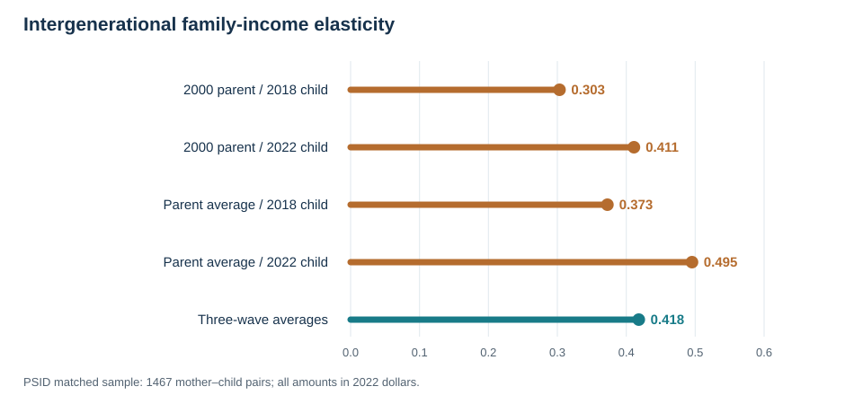

Matching Parents and Children with SQL in Python
How income timing changes an intergenerational elasticity
How can we follow a child after they leave their parents’ household? And does an estimate of intergenerational income persistence change when we replace one year’s income with an average across several years? I use PSID data to answer these questions with SQL inside Python. The goal is to show a reproducible match and a careful comparison, not to claim that one estimate captures a causal effect.
Start with individual IDs
I downloaded two PSID Data Center extracts: the Parent Identification File and a cross-year individual file. The first has 103,725 records; the second has 40,637. In the parent file, PID2 and PID3 identify the child, while PID4 and PID5 identify the birth mother. The individual file uses ER30001 and ER30002 as stable personal IDs. These IDs, not a shared address or household number, establish the parent–child link. The core of the complete SQL query is:
FROM pid AS p
JOIN person AS child
ON child.id_1968 = p.child_1968
AND child.person_no = p.child_person
JOIN person AS mother
ON mother.id_1968 = p.mother_1968
AND mother.person_no = p.mother_personSELECT chooses the IDs and income measures we need. JOIN connects the verified mother–child pair to each person’s records. GROUP BY then gathers each person’s income observations, and AVG creates a three-wave measure. For example:
SELECT id_1968, person_no, AVG(real_income) AS parent_avg
FROM income
WHERE income_year IN (2000, 2002, 2004)
GROUP BY id_1968, person_no;The Python script reads the two fixed-width extracts directly from their ZIP files, loads selected fields into an in-memory SQLite database, runs the SQL, and calculates the slopes. It does not save a person-level matched file.
Compare the same pairs
I use family income, not individual wages. Parent income refers to 2000, 2002, and 2004; adult-child income refers to 2018, 2020, and 2022. I convert each amount to 2022 dollars using annual averages of FRED’s CPI series. The CPI table records the six values used.
The analysis keeps children aged 30–40 in 2023 and birth mothers aged 35–70 in 2005, with a plausible 15–45 year age gap. Each person must have positive, usable income in all three relevant waves and be the family reference person, spouse, or partner in those waves. These rules leave 1,467 mother–child pairs. I use this same selected sample for every comparison.
For each income measure, I estimate the slope in \(\log(\text{child family income})=\alpha+\beta\log(\text{mother family income})+\varepsilon\). Here \(\beta\) is an intergenerational elasticity: a 10% difference in a mother’s family income corresponds approximately to a \(10\beta\)% difference in the adult child’s family income in this sample. It is a descriptive association.
| Mother’s family-income measure | Adult child’s family-income measure | Elasticity |
|---|---|---|
| 2000 only | 2018 only | 0.303 |
| 2000 only | 2022 only | 0.411 |
| Average, 2000–2004 | 2018 only | 0.373 |
| Average, 2000–2004 | 2022 only | 0.495 |
| Average, 2000–2004 | Average, 2018–2022 | 0.418 |

With the child’s year fixed at 2018, averaging the mother’s family income changes the estimate from 0.303 to 0.373. With the mother’s measure fixed at 2000, using the child’s 2022 rather than 2018 family income changes it from 0.303 to 0.411. The three-wave average for both generations yields 0.418, which is below the 0.495 estimate that uses only the child’s 2022 income. Averaging does not mechanically raise an elasticity.
What the comparison can—and cannot—show
One year’s income may reflect a temporary shock or a particular career stage. Averaging several years can smooth short-lived changes, so it may better represent long-run economic status. A separate simulation in this repository makes the life-cycle problem explicit: its designed long-run sample slope is 0.444, while a single early-career year produces 0.149. Those numbers come from invented data, not the PSID.
The real PSID results show sensitivity to timing and averaging, but they do not isolate life-cycle bias. The child’s age changes between 2018 and 2022, and the economy changes too. We also cannot observe each family’s true permanent income. This sample excludes many families without complete positive income records, and I do not apply survey weights. It therefore does not represent a national mobility estimate.
The practical lesson is to verify family links with individual IDs, compare income measures on the same sample, and state exactly what each comparison identifies. The replication guide lists the extract variables, commands, outputs, and privacy rules. It links the aggregate estimates; the raw PSID records remain outside the public repository. Haider and Solon discuss why income measured at different ages can relate differently to long-run income.